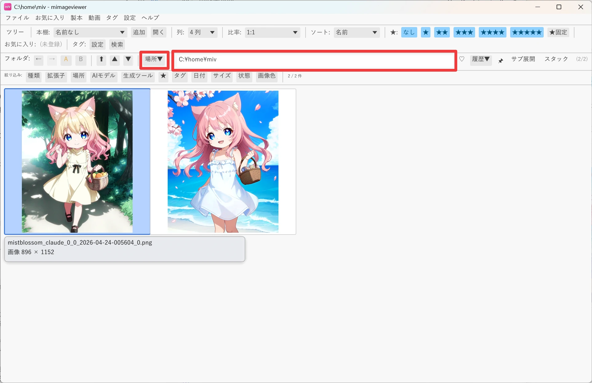
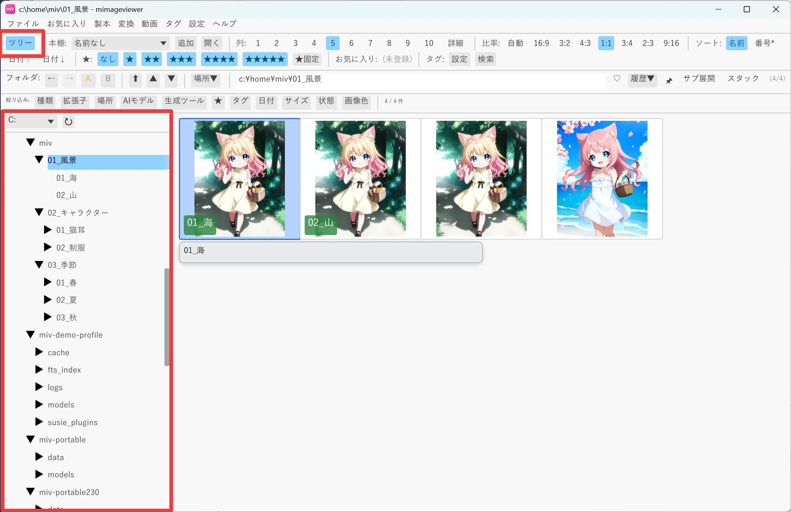

フォルダを開く・移動する
mImageViewer で最初に戸惑いやすいのが「フォルダの行き来」です。 キーボードのツリー移動を覚えると、マウスに持ち替えずに大量のフォルダを一気に見て回れます。 ここでは開き方から、隣のフォルダ・親フォルダへの移動までを順番に見ていきます。
まずフォルダを開く
起動直後の画面から、見たい画像の入ったフォルダを開きます。方法はいくつかあります。
- 画面上部のフォルダバーにフォルダのパスを入力して Enter（空欄のまま Enter を押すとドライブ一覧が出ます）
- フォルダバーの 場所▼ →「ドライブ一覧」から、目的のドライブを選んでたどる
- よく見る場所はお気に入りから一発で開く（お気に入りで素早くアクセス）
既定では、次回起動時に前回表示していた場所が自動で復元されます（この動作は環境設定で変更できます）。
フォルダのドラッグ＆ドロップでは「開け」ません。
エクスプローラーから mImageViewer のウィンドウへドロップする操作は、
「今表示しているフォルダへファイルをコピーする」動きになります。
安全のためフォルダのドロップは無効化されており、フォルダを落とすと
「フォルダのドロップは現在無効です」と表示されてスキップされます。
フォルダを開きたいときは、上のいずれかの方法を使ってください。

キーボードでフォルダを渡り歩く
一覧を見ながら隣のフォルダへ移りたいときは、マウスを使わずキーボードだけで移動できます。 Ctrl+↓ / Ctrl+↑ は、フォルダツリーを 上から順にたどるように動きます（深い階層も自動的に潜ります）。
- まず適当な親フォルダを開きます。サブフォルダが並んでいる状態が分かりやすいです。
- Ctrl+↓ を押すと、次のフォルダ（最初の子 → 無ければ次の兄弟 → …）へ移動します。押し続けると先へ進めますが、画像などを含まないフォルダは自動的に読み飛ばされます（飛ばす深さは設定で調整できます）。同じ階層の兄弟フォルダだけを順に見たいときは Ctrl+PageDown / PageUp を使います（空フォルダも飛ばしません）。
- Ctrl+↑ は逆順にたどります。行き過ぎたときはこれで 1 つ戻ります。
- BS（Backspace）はいつでも親フォルダへ。階層を一段上がりたいときはこちら。

「今どこにいるか」を見失ったら ── フォルダバーのパスを見れば現在地が分かります。
まったく別の場所へ飛びたいときは BS で親へ戻るより、フォルダバーやお気に入りから開き直す方が速いことがあります。
ショートカット早見表
| キー | 動作 |
|---|---|
| Ctrl+↓ | 次のフォルダへ（ツリーを前順にたどる。画像なしフォルダは読み飛ばす） |
| Ctrl+↑ | 前のフォルダへ |
| Ctrl+PageDown / PageUp | 同じ階層の次 / 前の兄弟フォルダへ（空フォルダも飛ばさない） |
| BS | 親フォルダへ戻る |
| Enter | 選択中のフォルダを開く / 画像をフルスクリーン表示 |